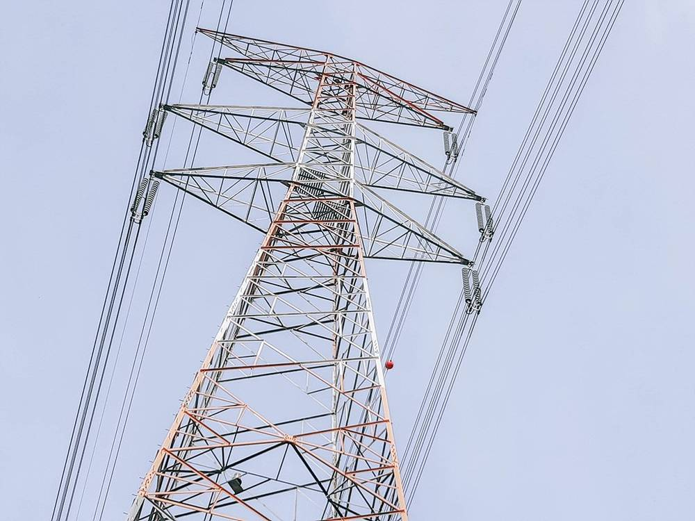

한전 송전망 입지선정 100건 넘어…연 25건에서 58건으로, 주민이 먼저 변전소 유치 신청한 첫 사례도

고창 성송면서 100호 기념행사…송전선로 규모 5.4배·변전소 용량 2.7배, 선로 주변 '계통햇빛소득마을' 추진
한국전력이 지난해 5월 제11차 장기송변전설비계획을 세운 뒤 송전선로·변전소 입지선정을 100건 넘게 마쳤다. 한전은 12일 전북 고창군 성송면에서 주민과 정부 관계자 등 약 130명이 참석한 가운데 입지선정 100호 기념행사를 열었다. 입지선정 실적은 2021~2024년 연평균 25건에서 2025~2026년 연평균 58건으로 늘었고, 대상 송전선로는 연평균 206C-km에서 1,116C-km로 약 5.4배, 변전소 용량은 8.6GVA에서 23.15GVA로 약 2.7배 커졌다. 고창의 345kV 신고창변전소는 주민이 먼저 유치를 신청한 첫 사례다. 한전은 입지선정 초기부터 주민 의견을 반영하고, 기존·신규 선로를 합쳐 철탑 수를 줄이며, 주민 밀집지역은 지중화를 먼저 검토한다고 밝혔다. 송전선로 주변 마을에 태양광 설비를 지원해 주민 소득을 만드는 '계통햇빛소득마을'도 추진한다.
시민에너지 관점
주민이 변전소를 먼저 불러들였다는 것은, 처음부터 함께 정하고 이익을 나누면 전력망 갈등도 풀린다는 증거다. 독일은 2023년부터 풍력·태양광 발전소가 1kWh당 최대 0.2센트를 입지 지자체에 낼 수 있게 해 수용성을 높였다. 일회성 보상금은 갈등을 잠시 덮지만, 선로 주변 마을이 직접 소유한 발전소는 20년 동안 소득을 만든다. 계통햇빛소득마을을 시범에 그치지 말고 모든 신규 선로 계획에 기본으로 넣어야 한다.
출처: 이코노미사이언스 2026-11-13 정연재 원문 보기
韓電の送電網立地選定が100件超え…年25件から58件に、住民が先に変電所誘致を申請した初の事例も
高敞・星松面で100号記念行事…送電線路規模5.4倍・変電所容量2.7倍、線路周辺で「系統日差し所得村」推進
韓国電力公社（韓電）は昨年5月に第11次長期送変電設備計画を策定して以降、送電線路・変電所の立地選定を100件以上終えた。韓電は12日、全羅北道高敞郡星松面で住民や政府関係者など約130人が出席する中、立地選定100号の記念行事を開いた。立地選定の実績は2021～2024年の年平均25件から2025～2026年には年平均58件に増え、対象の送電線路は年平均206C-kmから1,116C-kmへ約5.4倍、変電所容量は8.6GVAから23.15GVAへ約2.7倍に拡大した。高敞の345kV新高敞変電所は、住民が先に誘致を申請した初の事例だ。韓電は、立地選定の初期段階から住民の意見を反映し、既存・新規の線路を統合して鉄塔の数を減らし、住宅密集地では地中化を優先的に検討するとしている。送電線路周辺の村に太陽光設備を支援して住民所得を生む「系統日差し所得村」も推進する。
市民エネルギーの視点
住民が自ら変電所を呼び込んだことは、最初から共に決めて利益を分かち合えば電力網をめぐる対立も解けるという証拠だ。ドイツは2023年から、風力・太陽光発電所が1kWh当たり最大0.2セントを立地自治体に支払えるようにし、受容性を高めた。一度きりの補償金は対立を一時的に覆うだけだが、線路周辺の村が自ら所有する発電所は20年にわたって所得を生む。系統日差し所得村を試行で終わらせず、すべての新規線路計画に標準として組み込むべきだ。
出典: 이코노미사이언스 2026-11-13 정연재 原文を読む
韩电输电网选址突破100项…从每年25项增至58项，首次出现居民主动申请引进变电站
高敞星松面举行第100项纪念活动…输电线路规模增5.4倍、变电站容量增2.7倍，线路周边推进"电网阳光收入村"
韩国电力公社（韩电）自去年5月制定第11次长期输变电设备计划以来，已完成100多项输电线路和变电站选址。韩电12日在全罗北道高敞郡星松面举行选址第100项纪念活动，居民和政府相关人员等约130人出席。选址数量从2021至2024年的年均25项增至2025至2026年的年均58项，涉及的输电线路从年均206C-km增至1,116C-km，约为5.4倍，变电站容量从8.6GVA增至23.15GVA，约为2.7倍。高敞的345kV新高敞变电站是居民主动申请引进的首个案例。韩电表示，从选址初期就反映居民意见，合并新旧线路以减少铁塔数量，并在居民密集地区优先考虑地下化。韩电还将推进"电网阳光收入村"，为输电线路周边村庄提供太阳能设施，为居民创造收入。
市民能源视角
居民主动引进变电站，证明只要从一开始共同决定、分享利益，电网冲突也能化解。德国从2023年起允许风电和光伏电站向所在地方政府支付每千瓦时最多0.2欧分，提高了社会接受度。一次性补偿金只能暂时掩盖矛盾，而线路周边村庄自己拥有的电站能在20年里持续创造收入。电网阳光收入村不应止于试点，而应成为所有新建线路计划的标准配置。
来源: 이코노미사이언스 2026-11-13 정연재 查看原文
KEPCO passes 100 grid siting decisions, up from 25 a year to 58, including first substation requested by residents
100th-site ceremony held in Gochang; transmission line length up 5.4-fold and substation capacity 2.7-fold, with 'grid sunlight income villages' planned along routes
Korea Electric Power Corp. (KEPCO) has completed more than 100 site selections for transmission lines and substations since drawing up its 11th long-term transmission and substation plan in May last year. On Nov. 12 it held a ceremony marking the 100th selection in Seongsong-myeon, Gochang County, North Jeolla, attended by about 130 residents and government officials. Site selections rose from an annual average of 25 in 2021-2024 to 58 in 2025-2026, while the transmission lines involved grew about 5.4-fold, from 206 to 1,116 circuit-km a year, and substation capacity about 2.7-fold, from 8.6 to 23.15 GVA. The 345 kV New Gochang substation is the first case in which residents applied to host the facility. KEPCO said it reflects residents' views from the start of siting, combines existing and new lines to cut the number of towers, and considers undergrounding first in densely populated areas. It also plans "grid sunlight income villages" that support solar installations in villages along transmission routes to generate resident income.
Citizen Energy View
Residents inviting a substation shows that grid conflicts can be resolved when decisions are made together from the start and benefits are shared. Since 2023 Germany has let wind and solar plants pay host municipalities up to 0.2 cents per kWh, raising acceptance. One-off compensation only papers over conflict, while a power plant owned by villages along the line generates income for 20 years. Grid sunlight income villages should not stop at pilots but become standard in every new line plan.
Source: 이코노미사이언스 2026-11-13 정연재 Read the original